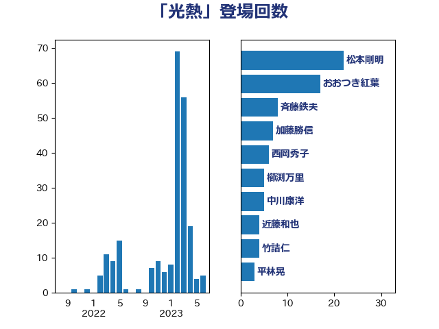

単語「光熱」

| 松本剛明 | 自由民主党 | 22 回 |
| おおつき紅葉 | 立憲民主党 | 17 回 |
| 斉藤鉄夫 | 公明党 | 8 回 |
| 加藤勝信 | 自由民主党 | 7 回 |
| 西岡秀子 | 国民民主党 | 6 回 |
| 櫛渕万里 | れいわ新選組 | 5 回 |
| 中川康洋 | 公明党 | 5 回 |
| 近藤和也 | 立憲民主党 | 4 回 |
| 竹詰仁 | 国民民主党 | 4 回 |
| 平林晃 | 公明党 | 3 回 |
| 岸田文雄 | 自由民主党 | 3 回 |
| 小宮山泰子 | 立憲民主党 | 3 回 |
| 宮本岳志 | 日本共産党 | 3 回 |
| 中野洋昌 | 公明党 | 3 回 |
| 野田国義 | 立憲民主党 | 2 回 |
| 芳賀道也 | 国民民主党 | 2 回 |
| 自見はなこ | 自由民主党 | 2 回 |
| 羽生田俊 | 自由民主党 | 2 回 |
| 紙智子 | 日本共産党 | 2 回 |
| 神津たけし | 立憲民主党 | 2 回 |
| 石井啓一 | 公明党 | 2 回 |
| 田嶋要 | 立憲民主党 | 2 回 |
| 永岡桂子 | 自由民主党 | 2 回 |
| 比嘉奈津美 | 自由民主党 | 2 回 |
| 岩渕友 | 日本共産党 | 2 回 |
| 岩本剛人 | 自由民主党 | 2 回 |
| 山口晋 | 自由民主党 | 2 回 |
| 尾身朝子 | 自由民主党 | 2 回 |
| 塩村あやか | 立憲民主党 | 2 回 |
| 吉川元 | 立憲民主党 | 2 回 |
| 倉林明子 | 日本共産党 | 2 回 |
| 伊藤岳 | 日本共産党 | 2 回 |
| 中川貴元 | 自由民主党 | 2 回 |
| 中川宏昌 | 公明党 | 2 回 |
| 世耕弘成 | 自由民主党 | 2 回 |
| 高橋光男 | 公明党 | 1 回 |
| 馬淵澄夫 | 立憲民主党 | 1 回 |
| 青島健太 | 日本維新の会 | 1 回 |
| 長友慎治 | 国民民主党 | 1 回 |
| 道下大樹 | 立憲民主党 | 1 回 |
| 西田実仁 | 公明党 | 1 回 |
| 笠井亮 | 日本共産党 | 1 回 |
| 稲富修二 | 立憲民主党 | 1 回 |
| 石田昌宏 | 自由民主党 | 1 回 |
| 石川博崇 | 公明党 | 1 回 |
| 石井浩郎 | 自由民主党 | 1 回 |
| 田村貴昭 | 日本共産党 | 1 回 |
| 田所嘉徳 | 自由民主党 | 1 回 |
| 田名部匡代 | 立憲民主党 | 1 回 |
| 漆間譲司 | 日本維新の会 | 1 回 |
| 浅田均 | 日本維新の会 | 1 回 |
| 泉健太 | 立憲民主党 | 1 回 |
| 河野義博 | 公明党 | 1 回 |
| 櫻井周 | 立憲民主党 | 1 回 |
| 柿沢未途 | 無所属 | 1 回 |
| 柴愼一 | 立憲民主党 | 1 回 |
| 林佑美 | 日本維新の会 | 1 回 |
| 松川るい | 自由民主党 | 1 回 |
| 松山政司 | 自由民主党 | 1 回 |
| 末松信介 | 自由民主党 | 1 回 |
| 星北斗 | 自由民主党 | 1 回 |
| 日下正喜 | 公明党 | 1 回 |
| 志位和夫 | 日本共産党 | 1 回 |
| 庄子賢一 | 公明党 | 1 回 |
| 島尻安伊子 | 自由民主党 | 1 回 |
| 岸真紀子 | 立憲民主党 | 1 回 |
| 山本太郎 | れいわ新選組 | 1 回 |
| 山本博司 | 公明党 | 1 回 |
| 小沢雅仁 | 立憲民主党 | 1 回 |
| 小池晃 | 日本共産党 | 1 回 |
| 小倉將信 | 自由民主党 | 1 回 |
| 宮本徹 | 日本共産党 | 1 回 |
| 宮崎雅夫 | 自由民主党 | 1 回 |
| 奥野総一郎 | 立憲民主党 | 1 回 |
| 大石あきこ | れいわ新選組 | 1 回 |
| 大島九州男 | れいわ新選組 | 1 回 |
| 堤かなめ | 立憲民主党 | 1 回 |
| 古屋範子 | 公明党 | 1 回 |
| 佐藤英道 | 公明党 | 1 回 |
| 佐藤啓 | 自由民主党 | 1 回 |
| 伊藤孝恵 | 国民民主党 | 1 回 |
| 伊藤俊輔 | 立憲民主党 | 1 回 |
| 仁比聡平 | 日本共産党 | 1 回 |
| 井上哲士 | 日本共産党 | 1 回 |
| 串田誠一 | 日本維新の会 | 1 回 |
| 中谷一馬 | 立憲民主党 | 1 回 |
| 中西祐介 | 自由民主党 | 1 回 |
| 上田清司 | 国民民主党 | 1 回 |